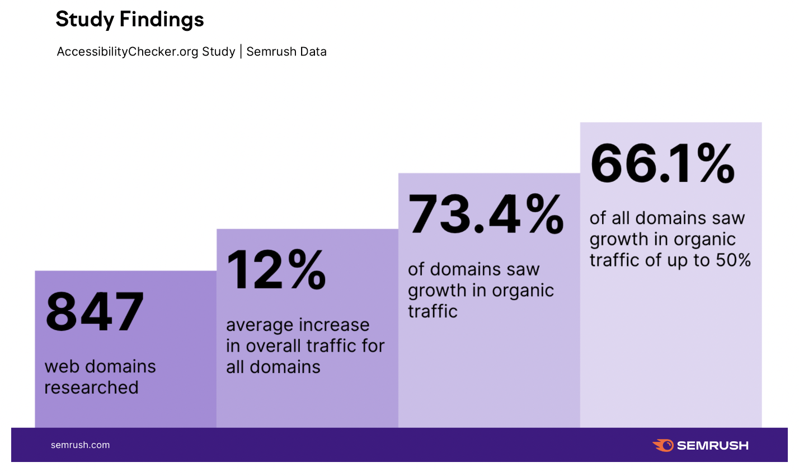

Over the past few weeks, we’ve all been wowed by powerful AI demos that promise to revolutionize how we create, review, and edit. But while many of these tools have shown off mind bending technology, many have failed to introduce features that actually simplify workflows and make things easier for users. At
So, drum roll please…
We’re delighted to introduce Raster's new AI-powered image description feature.
Auto-generate image descriptions with Raster's AI
Raster’s aim is to improve marketing workflows and make it easier for teams to manage their images and digital assets. To do this, we’ve created a powerful DAM that works faster than anything else out there, but now we want to make it work smarter.
The first step in providing you with an AI-powered DAM that really makes a difference is to use the technology to remove manual tasks. The less grunt work you have to do means that you can more time on the tasks that really make a difference.
The auto-generated description feature does just that. Now, whenever you upload a new image to your Raster library it will be automatically scanned and, in just a couple of seconds (or less), you will have a description of the image ready to go.

Now, these descriptions are fully editable, so you can apply whatever organizational standards or naming policies that you want. But they’re accurately, identify all of the key elements within an image and create a clear description. For the vast of users - and by vast we mean the overwhelming majority - they will never have to input or edit a description of an image within Raster.
Combine this with Raster's AI-powered tagging feature and you get a DAM that makes organization not only easy, but almost impossible to screw up. Trust me, I’ve tried.
The search feature then uses these tags and descriptions to help you find the images that you’re looking for in the blink of an eye.
Lost images are one of the biggest pain points when it comes to digital asset management and these three features have made that problem a thing of the past.
But the importance of the description feature goes beyond organization and search, it also plays a role in your SEO.
The importance of al-text
The image descriptions play an important role within the Raster platform to help you store and find your digital assets, but there’s more to it than just that. These descriptions will automatically be used as the alt-text for your images.
That might not sound incredibly exciting, but it is important. Alt-text, sometimes referred to as ‘alt attributes’ or ‘alt descriptions’, helps Google and other search engines to better understand that images and content on your website and serve up better results during searches.
And you know that means? Better SEO.
The artificial intelligence used by search engines to scan images is improving, but they still often rely on alt-text to understand the relevance and apply keywords to the images. This means that missing out on keywords within your alt-text, or even a description altogether, can impact the performance of your content.
It goes without saying that alt-text is particularly helpful when it comes to image SEO. If you’re hosting images that you think people might search for then it is certainly not an area that you want to overlook.
But alt-text’s relevance goes beyond SEO. The alt-text will also serve as a placeholder in instances where an image cannot be displayed and, even more importantly, is used by screen readers and other tools for accessibility.
In fact, research carried out by and found that>90% of websites are inaccessible to users with interpretive technologies and that improving digital accessibility on websites can have a huge impact on website performance.
Their study suggested that ‘digital accessibility is paramount for online discoverability’ and implementing the right protocols, including good alt-text, saw a growth in organic traffic of nearly 75%. The figures speak for themselves.
Good alt-text ensures that you’re website is fully understandable for every visitor and will boost your SEO and both of those will help your brand reputation, traffic, and conversation rate.
Start using Raster today
We’ve got more features and more big news coming over the next few weeks, but you can sign up to use Raster today. All of Raster's features are accessible through our free plan and help our users to improve their digital asset management and time-to-market on new content and campaigns.
Already using a DAM? Don’t worry, migration is easy, but you can reach out to us if you’d like to schedule a demo or find out more about the platform.